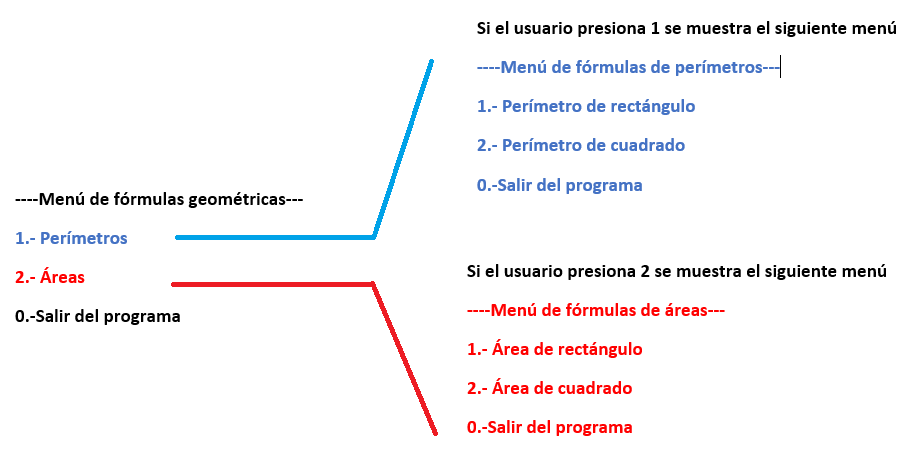
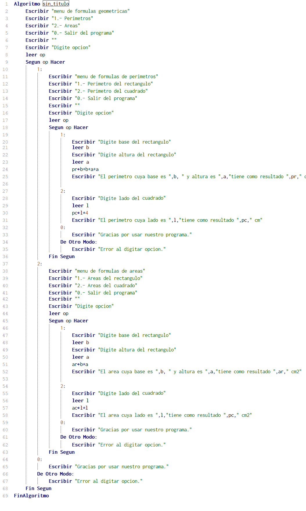

Realizar un menú de opciones que tenga la siguiente información

Solución
Solución: para este caso se evidencia la creación de un menú principal llamado “----Menú de fórmulas geométricas---” el cual tiene tres opciones. La opción uno indica la creación de un submenú llamado “----Menú de fórmulas de perímetros---”. La opción dos indica la creación de un submenú llamado “----Menú de fórmulas de áreas---”.
Se utiliza tres sentencias según: la primera es para el menú principal, la segunda para la opción 1 del menú principal que lleva al submenú de perímetros y la tercera para la opción 2 del menú principal que lleva al submenú de áreas.
Ejemplo
Si indicamos la opción 1 y después opción 2 indica que en el menú principal se única en la sección o submenú de fórmulas de perímetros y finalmente resuelve el perímetro del cuadrado.
Si indicamos la opción 2 y después opción 2 indica que en el menú principal se única en la sección o submenú de fórmulas de áreas y finalmente resuelve el área del cuadrado.
Si indicamos la opción 1 y después opción 1 indica que en el menú principal se única en la sección o submenú de fórmulas de perímetros y finalmente resuelve el perímetro del rectángulo.
Si indicamos la opción 2 y después opción 1 indica que en el menú principal se única en la sección o submenú de fórmulas de áreas y finalmente resuelve el área del rectángulo.
Opción cero siempre da como finalizado el programa.
Opción de otro modo indica cuando el usuario presiono alguna tecla que no perteneces a ninguna opción de los menús.
Pseudocodigo
